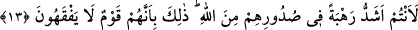

da zat itibariyle bir oldukları gibi. Bir oldukları zatları, onların insanlık yönüdür.
Birinin ortadan kalkması, diğerinin de ortadan kalkmasını gerektirmez. Hevâ, kalıbın
rûhâniyetinin üstün gelmesi sebebiyle bazan ruha yönelir. Bazan da kalıbın yoğunluk
kazanması sebebiyle nefse meyleder. Dolayısıyla nefse devamlı olarak yardım edemez.
Varlığının odunundaki zulmet ateşine üfürmekle yardım etse bile, kalp, ruh ve sır
aydınlığının dalgalarının saldırıları karşısında, karanlığın aydınlığa; gecenin de
gündüzden kaçarak yenildiği gibi yenilirdi. “(Bilinsin ki) üstün gelecek olanlar
şüphesiz Allah’ın tarafını tutanlardır.” (el-Mâide, 5/56)
13. Onların içlerinde size karşı duydukları korku, Allah’a olan korkularından
daha şiddetlidir. Böyledir, çünkü onlar anlamayan bir topluluktur.
“Onların içlerinde” Ey müminler! “size karşı duydukları korku, Allah’a olan
korkularından daha şiddetlidir.” Rahbet kelimesi ıstırab ve sıkıntı ile karışık üzüntü
demek olup burada mechûl fiilden masdardır. Yâni korkulmak bakımından daha
şiddetlidir. Âyet-i kerimedeki siz anlamında olan entüm muhatab zamiri müslümanlara
râci olup hitâb onlaradır. Yâni korkanlar müslümanlar değil, münâfıklardır. O halde
kendilerine hitâb edilen Müslümanlar, korkanlar değil kendilerinden korkulanlardır.
Âyetin mânâsı şöyledir: “Münâfıkların sizden korkuları, kalplerindeki Allah
korkularından daha şiddetlidir.”
Keşşaf’ta şöyle denilmiştir: Âyet-i kerimede içlerinde anlamındaki sudûrihim
kelimesi, onların iki yüzlülük ve nifaklarına delildir. Yâni onlar görünürde Allah’tan
korktuklarını açıklıyorlar, oysa siz onların içlerinde daha heybetli ve daha çok
korkulacak durumdasınız. Şâyet, “sanki onlar Allah’tan o kadar korkuyorlar mı ki,
O’ndan olan korkuları en şiddetli ve her şeyden çok olsun?” denilirse cevap olarak
derim ki: “Onların gizlide sizden olan korkuları, size açıkladıkları Allah korkusundan
daha şiddetlidir” demektir. Zira onlar Allah’tan çok korktuklarını sadece açıktan iddiâ
ediyorlardı.
Fakîr (Bursevî) derim ki: Onlar, müminlerden gönüllerinde Allah’ın nuru yansıdığı
için korkuyorlardı. Karanlık aydınlıktan kaçtığı, hoşlanmadığı ve ona karşı koyamadığı
gibi karanlıktan yana olanlar aydınlık kişilerden nefret eder, onunla bir arada bulunmaz.
Karanlıktan maksadımız, şirkin, inkârın, riyânın ve iki yüzlülüğün karanlığıdır.
Aydınlıktan maksadımız da tevhidin, îmânın, samîmiyet ve Allah korkusunun nurudur. Bu
sebepledir ki, Allah Teâlâ: “Allah’tan korkun ve bilin ki, Allah muttakîlerle
beraberdir” (el-Bakara, 2/194) buyurarak, takvâ sâhipleri ile beraber olduğunu haber
verip, muhâliflerine karşı onlara yardım etmiştir.
“Böyledir, çünkü onlar anlamayan bir topluluktur.” Yâni Allah Teâlâ’dan çok